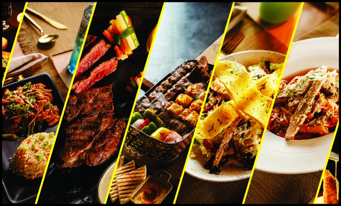

Cooking Since 2010
Cook Zone began as a small passion project between friends who shared a love for exceptional food. What started as humble kiosk has now grown into a beloved neighborhood establishment.
Our website offers the variety of easy and delicious recipes for all tastes. Whether you a beginner or a cooking lover, you will find something perfect for you.
Where every dish is made with love and fresh ingredients. We bring you the comfort of homemade food with authentic flavors, just like a warm family meal.
